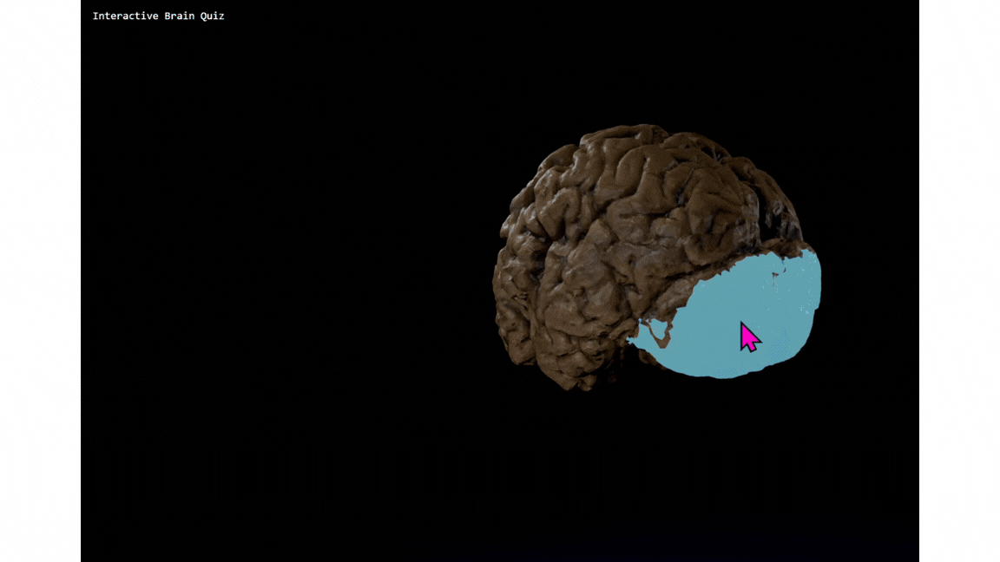
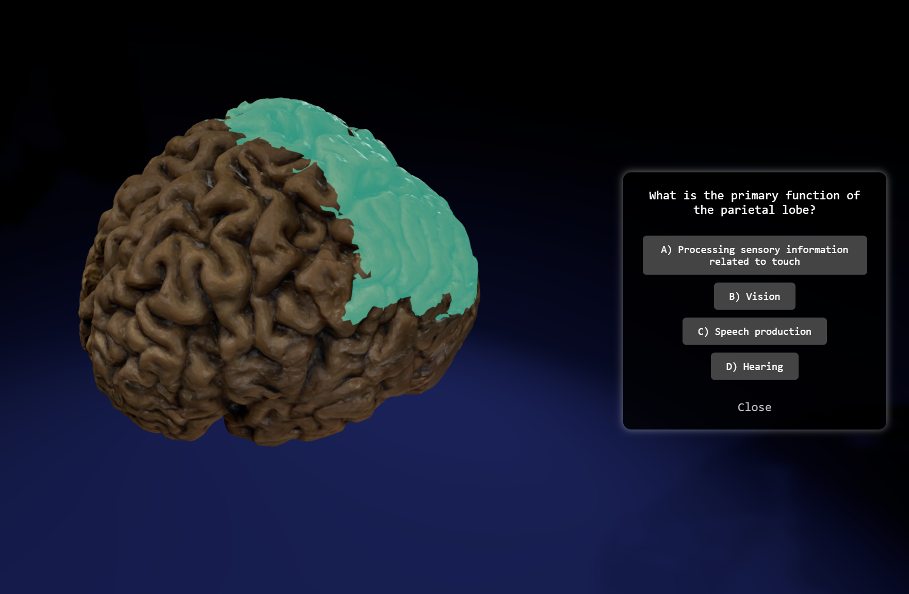
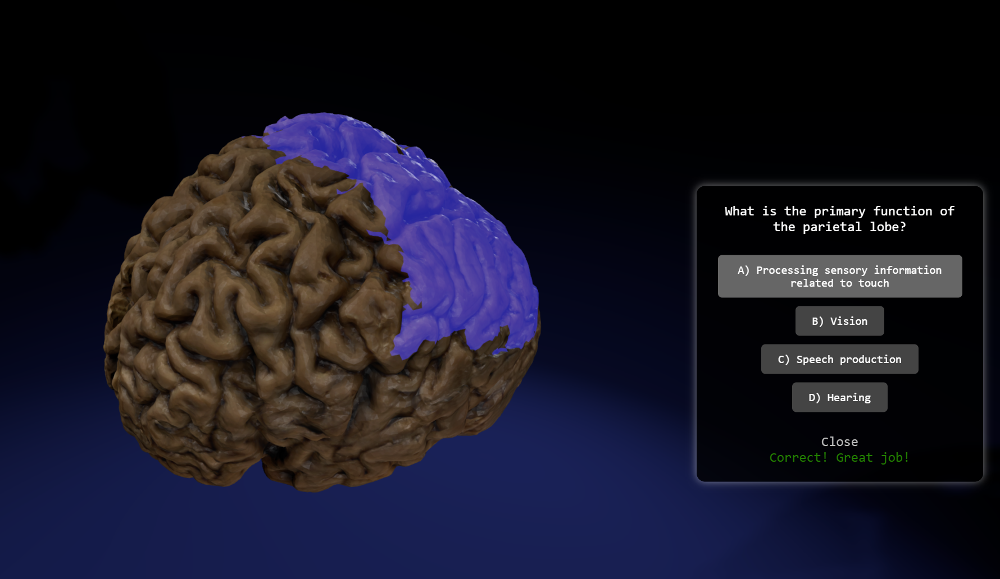
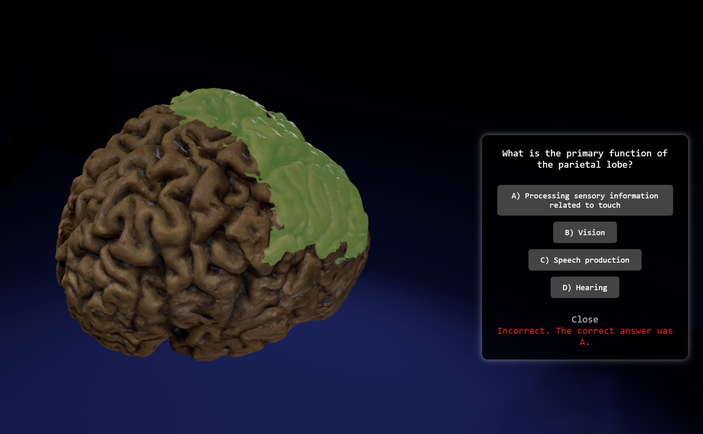

Brain Voyager: An Interactive Brain Anatomy Quiz Using THREE.js
October 2024
An interactive 3D learning tool built with THREE.js to explore basic brain anatomy through spatial interaction.

Project Overview
- Goal: Create an interactive 3D learning tool to explore basic brain anatomy.
- Role: Interaction design, 3D asset preparation, front-end development
- Technologies: THREE.js, HTML5, CSS3, JavaScript, Blender, Vercel for deployment
- Constraints: 3-week timeline, first-time using THREE.js and Blender
Motivation
I created this project for my Advanced Front-end Web Development class, which only required us to use a JavaScript library, but I specifically chose THREE.js because I'd seen what my friends built with it and thought it was incredible. The immersive 3D experiences they created made me want to dive in and figure it out for myself, even though I knew it would be challenging.
I've worked with CAD software like SketchUp and Fusion 360 before, but I'd never touched Blender. Learning both Blender and THREE.js simultaneously in three weeks was definitely ambitious, but 3D has always been something I find challenging in the best way. It pushes me to think differently about space, interaction, and how users navigate digital environments.
I chose brain anatomy because I wanted this to be more than just a technical exercise. I kept asking myself: how can 3D interaction actually make learning more engaging? A quiz felt like a natural way to combine exploration with education—letting users rotate the brain, click on regions, and test their knowledge in a way that feels active rather than passive.
Design Process
Asset Preparation
- Sourced 3D brain model from Poly Cam
- Used Blender to separate mesh components into anatomical regions for individual interaction
- Basic brain anatomy quiz content was created based on common neuroscience curriculum, focusing on major brain regions and their functions. More information available here.
Interaction Design
Hover States- Brain regions glow with a random colored emissive effect when the user hovers over them
- Hover feedback is provided through visual cues and color changes, siginifying the possible action (clicking on the brain region they are targeting)
- Why? Makes the action discoverable and engaging without cluttering the interface

Quiz Card- When a brain region is clicked, a quiz card appears to the right with a question about that region's function
- Users can select an answer, and the card provides immediate feedback on whether they were correct (green for correct, red for incorrect)
- Auto-dismisses after a set time, or when the user clicks cancel
- Why? Quick feedback loop keeps the learning active, auto-dismiss prevents clutter



- Users can orbit around the brain and zoom in/out but within constraint
- Zoom is limited to 1.5-3 units to keep the brain visible and focused
- Rotation is limited, cannot rotate below ground plane
- Why? Prevents users from disorientation or getting lost, keeping the focus on learning
Technical Implementation
Key Challenges
- Debugging THREE.js raycasting and mesh hierarchy - the imported Blender model was read as a tree structure, requiring node traversal and console logging to identify which mesh regions were being clicked, then organizing them into a workable array for quiz logic
- Lighting setup to make anatomy visible and appealing
What I Learned
Designing for focus in 3D environments
I kept the quiz interaction in 2D while using the 3D brain purely for visualization. 3D interaction would have been flashy, but it would distract from the educational goal. I also constrained camera zoom and orbit to prevent users from losing orientation.
THREE.js scene graph architecture
The biggest technical challenge was understanding how Three.js reads mesh hierarchies as a tree structure. I spent significant time debugging raycasting with console logs, traversing through nodes to figure out how the imported Blender meshes were being parsed, then sorting them into an array for click detection.
Balancing aesthetics and functionality
I wanted the floating brain to feel sci-fi and engaging (hence the random highlight colors for fun), but not at the expense of usability. This meant making intentional tradeoffs between visual appeal and keeping the interface learner-focused.
Blender as a web asset pipeline tool
I found Blender surprisingly accessible for preparing 3D models for web use, even without deep 3D modeling skills. The creative freedom to modify and export assets for browser integration was eye-opening.
Future Improvements
- Add loading state with progress indicator to provide feedback during 3D asset initialization
- Optimize polygon count using Blender's decimate modifier to improve load time while preserving anatomical accuracy
- Expand quiz content to include more brain regions and detailed information
- Implement scoring system and progress tracking
Deliverables
- Live Demo: View Live Demo
- Source Code: View Source Code